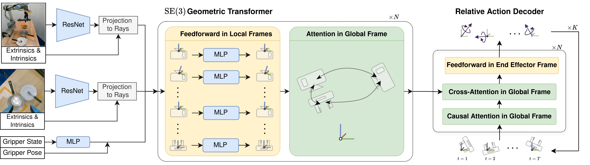

Recent work has shown that equivariant policy networks can achieve strong perfor- mance on robot manipulation tasks with limited human demonstrations. However, existing equivariant methods typically require structured inputs, such as 3D point clouds or top-down camera views, which prevents their use in low-cost setups or dynamic environments. In this work, we propose the first SE(3)-equivariant policy learning framework that operates with only RGB image observations. The key insight is to treat image-based data as collections of rays that, unlike 2D pixels, transform under 3D roto-translations. Extensive experiments in both simulation with diverse robot configurations and real-world settings demonstrate that our method consistently surpasses strong baselines in both performance and efficiency.
Goal. Bring the benefits of equivariance to image-based robot learning.
Key idea. Associate image features with SE(3) geometric representations and use geometric transform attention to process observations from multiple, stationary or moving cameras.
Takeaway. Our method achieves SE(3) equivariance to global transformations without imposing constraints on layout or number of cameras.

@inproceedings{kleeraven,
title={RAVEN: End-to-end Equivariant Robot Learning with RGB Cameras},
author={Klee, David and Hu, Boce and Cole, Andrew and Tian, Heng and Wang, Dian and Platt, Robert and Walters, Robin},
booktitle={The Fourteenth International Conference on Learning Representations}
}